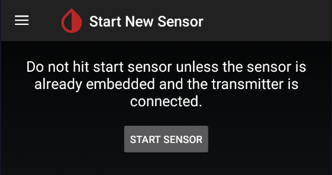
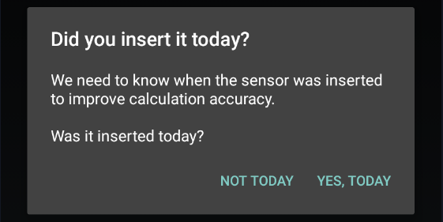
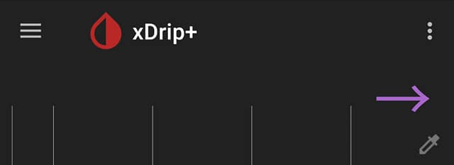

Start sensor
Starting a sensor in xDrip+ has very different functions depending on the sensor itself.
G4 with bridge, G5, G6 and ONE⌁
Reference documentation is here.
xDrip+ will actually send a sensor start command to the transmitter, the same way it would be done by the receiver or the vendor master app.
If xDrip+ already has a started sensor, you will need to stop it before starting the new one.
Starting an already started sensor will just allow xDrip+ to continue the current session without interfering.
Warning
If you use the receiver or a connected pump, let them start and stop sensors: don't do that with xDrip+.
Starting a new sensor should be done only once G5 or G6/ONE settings and connection have been verified.
Never attempt to restart a G6 sensor when in trouble.
You cannot start a sensor when the transmitter has exceeded its programmed lifetime (105 days for G5 and 99 for G6). You can only hard reset old versions of transmitters.


Confirm START SENSOR

xDrip+ will drive you to the system status page, do not exit until the transmitter is connected.
During warm-up phase xDrip+ will not display data, you will see an indication on the main graph of the time necessary until then.
Check system status from time to time to make sure the transmitter is connected. If connection drops, check your G5 or G6 settings and connection.
Sensor code⌁
Once warm-up is complete, if you're using a G6 or ONE, you will be asked to enter the sensor calibration code.
This is the 4 digits number indicated on your sensor sticker protection. Take a picture of it to avoid losing it.
Do not start a sensor with a code different from the one received with it. If you lost the sensor code, see below: No code start.
No code start
If you use the sensor code 0000 (4 zeroes) you will start the G6 or ONE sensor in G5 mode: two calibrations at 12 hours distance then once every 24 hours will be required.
If you're using a G5 you will need to calibrate.
Libre⌁
xDrip+ is not able to start a Libre sensor, neither is it to stop one (actually you can't stop this sensor: if it doesn't fail it will run it's useful lifetime and stop by itself after 14 days and 12 hours).
In order to start your sensor you need to use the vendor reader or app, some other third party apps like Glimp-S and eDropletNFC can start the Libre sensor.
xDrip+ sensor start is only used to track lifetime and make sure calibrations are updated. This operation is necessary and recommended each time you replace your sensor.
Confirm START SENSOR
If you inserted the sensor today (i.e. not started or recently started), answer YES, TODAY

If you answered today select the hour you physically started the sensor dragging the blue pointer to the correct time. With 12 hours display, tap am orpm. With 24 hours display drop the correct hour either on the inner or outer ring for the correct hour. Tap OK.

Drag the minutes blue pointer to the correct time and tap OK.

The newly started sensor will continue its warm-up if started from less than one hour.
Warning
Even if xDrip+ will attempt reading a sensor during its warm-up phase, values can range from unreliable to inconsistent and should not be used.

If you're using OOP1 or OOP2 without calibration, BG will start displaying immediately without need of the initial calibration.
If you're using an already started sensor you will have a calibration request within 15 minutes.
If you see a purple arrow you might have made a mistake in the date and time the sensor was started as BG data is available but won't display during the 1 hour warm-up.

xDrip+ will now wait for readings and update the progress. Stay on this screen. Every reading is done 5 minutes apart so it should take less than 20 minutes.

If the data source shows LimiTTer and you're not using an actual LimiTTer, your bridge device is not connected correctly.
The indication No data received yet will change to Need 3 recent readings. If no data is received, check your parameters.

When enough readings are received, the calibration request will display. More about calibration here.
If your BG is within normal range (recommended in the lower normal range for a new sensor) and has been stable for the last 10 minutes, with no carbs not insulin active, you can calibrate.
If your BG is quickly varying or not within normal range, it is not recommended to calibrate now.

Two readings are required from legacy G4 receiver, you can use only one if you're sure it's valid. Just put twice the same value. You can set one value as default disabling double calibration.
Your BG should start displaying on the main graph.
Followers and companion apps⌁
It it sometimes necessary to "start" a sensor session in xDrip+ to get readings.
Starting or stopping a sensor in xDrip+, when using a follower or companion source doesn't have any impact on the sensor.
Warning
The only exception is xDrip+ Sync follower that might transmit the Start or Stop command to the actual sensor if it is directly connected to xDrip+ acting as master.
Do not use Start and Stop sensor with xDrip+ Sync follower unless you know the person with the master xDrip+ phone will know what to do with a stopped sensor!
Confirm START SENSOR
Answer NOT TODAY
xDrip+ should pick-up readings with the next measurement.